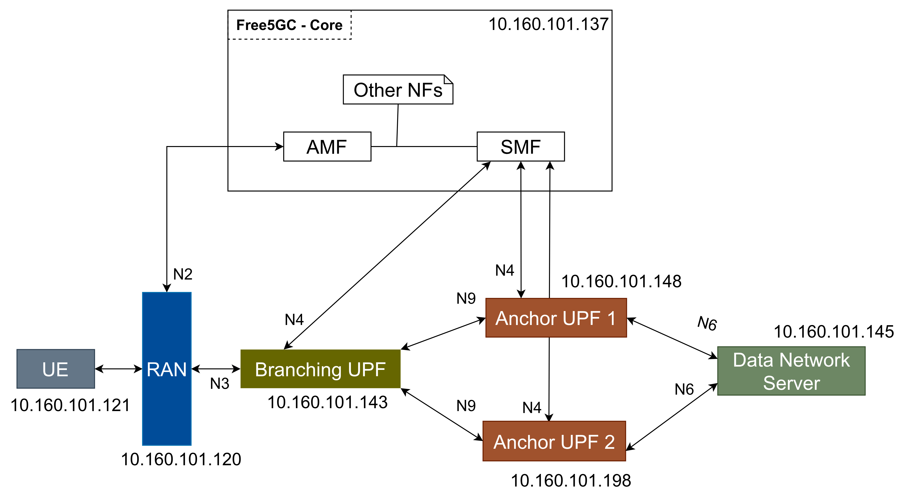

ULCL Dynamic
Traffic Steering
This guide demonstrates how to implement Dynamic Traffic Steering in a 5G Core network using the Uplink Classifier (ULCL). With the free5GC framework, it demonstrates how to route user traffic across different Anchor UPFs efficiently, adapting to real-time requirements.
Part of the network topology implementation, we used this guide by s5uishida.
It describes a simple network
topology that uses free5GC and UERANSIM for ULCL with one I-UPF and two PSA-UPFs. We used go-upf for the implementation of the UPFs.
Topology

The VMs deployed in the setup are listed below:
| VM | IP Address | Role |
|---|---|---|
| free5gc-core | 10.160.101.137 | 5G Core (AMF, SMF, PCF, UDM, NRF, …) |
| ueransim-gnb | 10.160.101.120 | gNB simulator (UERANSIM) |
| ueransim-ue | 10.160.101.121 | UE simulator (UERANSIM) |
| i-upf | 10.160.101.143 | Intermediate / Branching UPF (ULCL node) |
| psa-upf | 10.160.101.148 | PSA anchor UPF 1 — default path |
| psa-upf2 | 10.160.101.198 | PSA anchor UPF 2 — steered path |
| server | 10.160.101.145 | Server / Data Network |
UE Details
| UE | IMSI | DNN | OP/OPc |
|---|---|---|---|
| UE | 208930000000001 | internet | OPc |
Traffic Paths
10.160.101.145/32 or dynamic API callPrerequisites
Required software versions for all VMs.
| Component | Version | Notes |
|---|---|---|
| free5GC | v3.3.0 | With SMF source patches (Section 6) |
| UERANSIM | latest | |
| gtp5g | v0.8.6 | With kernel patch (Section 5) — required on all UPF VMs |
| Go | 1.21+ | |
| Ubuntu | 20.04 / 22.04 | All VMs |
Build gogtp5g-tunnel
Run on I-UPF and PSA-UPF VMs only.
# Run on I-UPF and PSA-UPF VMs
git clone https://github.com/free5gc/go-gtp5gnl ~/go-gtp5gnl
cd ~/go-gtp5gnl/cmd/gogtp5g-tunnel
go build .gogtp5g-tunnel
unless actively debugging.SMF Configuration
File: /home/localadmin/free5gc/config/smfcfg.yaml — see the full document for the complete YAML.
Key points:
10.61.0.0/16), ActivateTunnelAndPDR() panics.
upfcfg.yaml. N6 is only used in smfcfg.yaml.
smfcfg.yaml
info:
version: 1.0.7
description: SMF initial local configuration
configuration:
smfName: SMF # the name of this SMF
# Service-based interface information
sbi:
scheme: http # the protocol for sbi (http or https)
registerIPv4: 127.0.0.2 # IP used to register to NRF
bindingIPv4: 127.0.0.2 # IP used to bind the service
port: 8000 # Port used to bind the service
tls: # the local path of TLS key
key: cert/smf.key # SMF TLS Certificate
pem: cert/smf.pem # SMF TLS Private key
# the SBI services provided by this SMF, refer to TS 29.502
serviceNameList:
- nsmf-pdusession # Nsmf_PDUSession service
- nsmf-event-exposure # Nsmf_EventExposure service
- nsmf-oam # OAM service
# the S-NSSAI list supported by this AMF
snssaiInfos:
- sNssai:
sst: 1
sd: 010203
dnnInfos:
- dnn: internet
dns:
ipv4: 8.8.8.8
ipv6: 2001:4860:4860::8888
# Optional: PLMN IDs configuration.
plmnList:
- mcc: 208 # Mobile Country Code (3 digits string, digit: 0~9)
mnc: 93 # Mobile Network Code (2 or 3 digits string, digit: 0~9)
locality: area1
# PFCP configuration for N4 interface.
pfcp:
nodeID: 10.160.101.137 # the Node ID of this SMF
listenAddr: 10.160.101.137 # the IP/FQDN of N4 interface on this SMF (PFCP)
externalAddr: 10.160.101.137 # the IP/FQDN of N4 interface on this SMF (PFCP)
assocFailAlertInterval: 10s
assocFailRetryInterval: 30s
heartbeatInterval: 10s
# Userplane nodes information, specifying details for AN and UPF.
userplaneInformation:
upNodes:
gNB1:
type: AN
I-UPF:
type: UPF
nodeID: 10.160.101.143
addr: 10.160.101.143
sNssaiUpfInfos:
- sNssai:
sst: 1
sd: 010203
dnnUpfInfoList:
- dnn: internet
interfaces:
- interfaceType: N3
endpoints:
- 10.160.101.143
networkInstances:
- internet
- interfaceType: N9
endpoints:
- 10.160.101.143
networkInstances:
- internet
PSA-UPF:
type: UPF
nodeID: 10.160.101.148
addr: 10.160.101.148
sNssaiUpfInfos:
- sNssai:
sst: 1
sd: 010203
dnnUpfInfoList:
- dnn: internet
pools:
- cidr: 10.61.0.0/16
staticPools:
- cidr: 10.60.100.0/16
interfaces:
- interfaceType: N9
endpoints:
- 10.160.101.148
networkInstances:
- internet
PSA-UPF2:
type: UPF
nodeID: 10.160.101.198
addr: 10.160.101.198
sNssaiUpfInfos:
- sNssai:
sst: 1
sd: 010203
dnnUpfInfoList:
- dnn: internet
interfaces:
- interfaceType: N9
endpoints:
- 10.160.101.198
networkInstances:
- internet
links:
- A: gNB1
B: I-UPF
- A: I-UPF
B: PSA-UPF
- A: I-UPF
B: PSA-UPF2
ulcl: true
t3591:
enable: true
expireTime: 16s
maxRetryTimes: 3
t3592:
enable: true
expireTime: 16s
maxRetryTimes: 3
nrfUri: http://127.0.0.10:8000
nrfCertPem: cert/nrf.pem
urrPeriod: 30
urrThreshold: 500000
requestedUnit: 1000
logger:
enable: true
level: debug
reportCaller: trueUE Routing
File: /home/localadmin/free5gc/config/uerouting.yaml
ueRoutingInfo:
UE1:
members:
- imsi-208930000000001
topology:
- A: gNB1
B: I-UPF
- A: I-UPF
B: PSA-UPF
specificPath:
- dest: 10.160.101.145/32
path: [I-UPF, PSA-UPF]
- dest: 10.160.101.145/32
path: [I-UPF, PSA-UPF2]
- dest: 8.8.8.8/32
path: [I-UPF]FindULCL() identifies the branching point.
gtp5g Kernel Module Patch
Apply on every UPF VM: I-UPF, PSA-UPF, and PSA-UPF2.
Patch — pdr.c (~line 308)
Rebuild and Reload
cd ~/gtp5g && make clean && make
sudo cp ~/gtp5g/gtp5g.ko /lib/modules/$(uname -r)/kernel/drivers/net/gtp5g.ko
sudo rmmod gtp5g 2>/dev/null && sudo modprobe gtp5g
lsmod | grep gtp5gSMF Source Code Patches
Three Go source patches fixing bugs in free5GC v3.3.0 that prevent ULCL from working correctly.
Patch 1 — Fix PSA2 N3 Interface Check
Patch 2 — Fix FindULCL Nil Pointer
Patch 3 — Fix SDF Filter Direction
Rebuild SMF
cd ~/free5gc/NFs/smf
go build ./...
go build -o ~/free5gc/bin/smf ./cmd/Dynamic Steering API
REST endpoint on the SMF that triggers live path switching via PFCP Session Modification.
api_steering.go
package sbi
import (
"net/http"
"github.com/gin-gonic/gin"
)
func (s *Server) getSteeringRoutes() []Route {
return []Route{
{ Name: "Steer Traffic", Method: http.MethodPost, Pattern: "/steer", APIFunc: s.HTTPSteerTraffic },
}
}
func (s *Server) HTTPSteerTraffic(c *gin.Context) {
s.Processor().HandleSteerTraffic(c)
}steering.go
NFs/smf/internal/sbi/processor/steering.go.
Implements HandleSteerTraffic, the handler wired up by api_steering.go
above.
Contains two key bug-fixes required for multi-UE operation — see § 14 for full diffs
and root-cause analysis.
package processor
import (
"fmt"
"net/http"
"github.com/free5gc/openapi/models"
pfcpType "github.com/free5gc/pfcp/pfcpType"
"github.com/free5gc/smf/internal/context"
smf_context "github.com/free5gc/smf/internal/context"
"github.com/gin-gonic/gin"
)
type SteerRequest struct {
SUPI string `json:"supi"`
PDUSessID int32 `json:"pduSessId"`
TargetUPF string `json:"targetUpf"`
}
func (p *Processor) HandleSteerTraffic(c *gin.Context) {
var req SteerRequest
if err := c.ShouldBindJSON(&req); err != nil {
c.JSON(http.StatusBadRequest, gin.H{"error": err.Error()})
return
}
if req.PDUSessID == 0 { req.PDUSessID = 1 }
smContext := smf_context.GetSMContextById(req.SUPI, req.PDUSessID)
if smContext == nil {
c.JSON(http.StatusNotFound, gin.H{"error": "SMContext not found", "supi": req.SUPI})
return
}
upi := smf_context.GetUserPlaneInformation()
targetUPNode := upi.GetUPFNodeByIP(req.TargetUPF)
if targetUPNode == nil {
c.JSON(http.StatusNotFound, gin.H{"error": "Target UPF not found", "targetUpf": req.TargetUPF})
return
}
targetUPF := targetUPNode.UPF
targetUPFName := upi.GetUPFNameByIp(req.TargetUPF)
smContext.SMLock.Lock()
defer smContext.SMLock.Unlock()
iface := targetUPF.GetInterface(models.UpInterfaceType_N9, smContext.Dnn)
if iface == nil {
c.JSON(http.StatusInternalServerError, gin.H{"error": "Target UPF has no N9 interface"})
return
}
targetIP, err := iface.IP(smContext.SelectedPDUSessionType)
if err != nil {
c.JSON(http.StatusInternalServerError, gin.H{"error": fmt.Sprintf("Cannot get target UPF IP: %v", err)})
return
}
var ulcfNodes []*context.DataPathNode
for _, dp := range smContext.Tunnel.DataPathPool {
if dp.IsDefaultPath { continue }
for node := dp.FirstDPNode; node != nil; node = node.Next() {
if node.UpLinkTunnel == nil || node.UpLinkTunnel.PDR == nil { continue }
pdr := node.UpLinkTunnel.PDR
if pdr.PDI.SDFFilter == nil || pdr.FAR == nil ||
pdr.FAR.ForwardingParameters == nil ||
pdr.FAR.ForwardingParameters.OuterHeaderCreation == nil { continue }
ulcfNodes = append(ulcfNodes, node)
}
}
if len(ulcfNodes) == 0 {
c.JSON(http.StatusInternalServerError, gin.H{"error": "no ULCL steering FAR found pointing to old UPF"})
return
}
var pdrList []*context.PDR
var farList []*context.FAR
debugFARs := ""
for _, node := range ulcfNodes {
ulFAR := node.UpLinkTunnel.PDR.FAR
if ulFAR == nil || ulFAR.ForwardingParameters == nil { continue }
existingTEID := uint32(0)
if ulFAR.ForwardingParameters.OuterHeaderCreation != nil {
existingTEID = ulFAR.ForwardingParameters.OuterHeaderCreation.Teid
}
ulFAR.ForwardingParameters.OuterHeaderCreation = &pfcpType.OuterHeaderCreation{
OuterHeaderCreationDescription: pfcpType.OuterHeaderCreationGtpUUdpIpv4,
Ipv4Address: targetIP,
Teid: existingTEID,
}
ulFAR.State = smf_context.RULE_UPDATE
pdrList = append(pdrList, node.UpLinkTunnel.PDR)
farList = append(farList, ulFAR)
debugFARs += fmt.Sprintf("FARID=%d,UPF=%s;",
ulFAR.FARID, node.UPF.NodeID.ResolveNodeIdToIp().String())
}
if len(farList) == 0 {
c.JSON(http.StatusInternalServerError, gin.H{"error": "no valid FARs to update"})
return
}
c.Header("X-Debug-FAR", debugFARs)
iUPFNode := ulcfNodes[0]
resChan := make(chan SendPfcpResult, 1)
pfcpState := &PFCPState{
upf: iUPFNode.UPF,
pdrList: pdrList,
farList: farList,
barList: []*context.BAR{},
qerList: nil,
urrList: nil,
}
go modifyExistingPfcpSession(smContext, pfcpState, resChan, "")
result := <-resChan
close(resChan)
if result.Err != nil || result.Status != smf_context.SessionUpdateSuccess {
c.JSON(http.StatusInternalServerError, gin.H{
"error": fmt.Sprintf("PFCP modification failed: %v", result.Err),
"status": result.Status,
})
return
}
smContext.SelectedUPF = targetUPNode
c.JSON(http.StatusOK, gin.H{
"status": "steering applied",
"supi": req.SUPI,
"targetUpf": targetUPFName,
"targetIp": req.TargetUPF,
})
}Startup Order
sudo ip link delete upfgtp 2>/dev/null
cd ~/gtp5g/go-upf && sudo ./upf -c upfcfg.yaml &sudo ip link delete upfgtp 2>/dev/null
cd ~/gtp5g/go-upf && sudo ./upf -c upfcfg.yaml &sudo ip link delete upfgtp 2>/dev/null
cd ~/gtp5g/go-upf && sudo ./upf -c upfcfg.yaml &cd ~/free5gc && ./build.shcd ~/UERANSIM/build
sudo ./nr-gnb -c ../config/free5gc-gnb.yaml &cd ~/UERANSIM/build
sudo ./nr-ue -c ../config/free5gc-ue.yaml &
sleep 3 && ping -I uesimtun0 10.160.101.145 -c 3iptables / Routing Rules
PSA-UPF (10.160.101.148)
sudo iptables -t nat -A POSTROUTING -s 10.60.0.0/16 -o <N6_IFACE> -j MASQUERADE
sudo ip route add 10.160.101.145/32 dev <N6_IFACE>PSA-UPF2 (10.160.101.198)
sudo iptables -t nat -A POSTROUTING -s 10.60.0.0/16 -o <N6_IFACE> -j MASQUERADE
sudo ip route add 10.160.101.145/32 dev <N6_IFACE>Server VM
sudo ip route add 10.60.0.0/16 via 10.160.101.148
sudo ip route add 10.60.0.0/16 via 10.160.101.198 metric 200Using the Dynamic Steering API
127.0.0.2:8000. All
curl commands must be run on the core VM with sudo.
Use steer.sh script
./steer.sh 10.160.101.148 # steer to PSA-UPF
./steer.sh 10.160.101.198 # steer to PSA-UPF2Verification Checklist
ping -I uesimtun0 10.160.101.145
— confirm packets flow before steering.sudo tcpdump -i upfgtp -n
simultaneously on both PSA-UPF VMs.sudo dmesg | tail -10 —
should NOT contain No PDR match this skb.Troubleshooting
sudo ip link delete upfgtpSelf-Healing Agent
The use case that ties the whole testbed together: an autonomous agent running on
free5gc-core that detects a GTP-U flood from live traffic and heals the network on its own,
with no human in the loop. Its "brain" is an LSTM classifier; its hands are the Dynamic Steering API from
§ 07. When it confirms an attack it steers only the malicious UEs onto the backup
anchor, leaving the legitimate UEs on their original path completely untouched.
Closed loop at a glance
Every two seconds the agent runs two probes concurrently, feeds the result to the LSTM, and — once an attack persists past a short confirmation window — issues per-UE steering calls:
/nsmf-steering/v1/steerRoles & addresses
| Constant | Value | Role |
|---|---|---|
| I_UPF_IP | 10.160.101.143 | Flood probe + ping source (SSH target, ens18) |
| FREE5GC_IP | 10.160.101.137 | Core — runs the steering curl calls |
| MONITOR_IP | 10.160.101.148 | PSA-UPF (active) — normal UEs stay here |
| FAILOVER_IP | 10.160.101.198 | PSA-UPF2 (backup) — malicious UEs steered here |
UE assignment
| Class | SUPIs | On healing |
|---|---|---|
| Normal (6) | imsi-…008, …001, …003, …006, …002, …004 | Kept on PSA-UPF (10.160.101.148) |
| Malicious (2) | imsi-…007 (uesimtun0), imsi-…005 (uesimtun1) | Steered to PSA-UPF2 (10.160.101.198) |
Detection — LSTM only
There is no hand-tuned threshold in the decision path. Each poll's 11 features are scaled and passed through the classifier, which emits a class label. The label alone drives the response:
| Class | Label | Response |
|---|---|---|
| 0 | NORMAL | No action; detection state reset |
| 4 | GTP_FLOOD | Steer the 2 malicious UEs only |
| other ≠ 0 | GRAY_FAILURE | Steer ALL 8 UEs to the backup anchor |
CONFIRM_SECS = 4 before healing fires. A single noisy poll will not trigger steering; if the
signal clears first, the timer resets.Feature vector (11 inputs)
Collected per poll from I-UPF's ens18 via
tcpdump -tt -nn 'udp port 2152' -c 1000 (2 s window):
packet_count, byte_count, avg_packet_size,
min_packet_size, max_packet_size, packet_size_variance,
inter_arrival_time_mean, inter_arrival_time_variance,
packet_rate_pps, ul_bitrate, dl_bitrate.
Healing action
On a confirmed GTP_FLOOD, steer_list() SSHes into the core and POSTs one steering
request per malicious SUPI to http://127.0.0.2:8000/nsmf-steering/v1/steer. It parses the
X-Debug-FAR response header for each call, records the updated FARIDs, and treats
the heal as successful only if every targeted UE returns a FARID. The agent then prints its convergence
metrics (attack type, pps at detection, time-to-heal, total convergence, and the normal/malicious split) and
exits.
Running it
free5gc-core and i-upf; passwordless sudo tcpdump on i-upf; and the
three model assets present under model/
(lstm_attack_classifier.pth, scaler.pkl, label_encoder.pkl).cd ~/agent
python3 agent_main.pyAt startup the agent logs its configuration banner (monitored anchors, normal vs. malicious SUPIs, confirmation delay) and then one line per poll showing N9 loss and the observed GTP-U pps, so you can watch the flood build and the heal fire in real time.
agent_main.py
#!/usr/bin/env python3
import subprocess, time, re, logging, threading
import joblib
import torch
import torch.nn as nn
import numpy as np
# ─────────────────────────────────────────────
# CONFIG
# ─────────────────────────────────────────────
I_UPF_IP = "10.160.101.143"
I_UPF_USER = "localadmin"
FREE5GC_IP = "10.160.101.137"
FREE5GC_USER = "localadmin"
MONITOR_IP = "10.160.101.148" # psa-upf (active)
FAILOVER_IP = "10.160.101.198" # psa-upf2 (backup)
SUPI_NORMAL = [
"imsi-208930000000008", # uesimtun2 → 10.61.0.3
"imsi-208930000000001", # uesimtun3 → 10.61.0.4
"imsi-208930000000003", # uesimtun4 → 10.61.0.5
"imsi-208930000000006", # uesimtun5 → 10.61.0.6
"imsi-208930000000002", # uesimtun6 → 10.61.0.7
"imsi-208930000000004", # uesimtun7 → 10.61.0.8
]
# Malicious UEs → steered to PSA-UPF2 on GTP_FLOOD
SUPI_MALICIOUS = [
"imsi-208930000000007", # uesimtun0 → 10.61.0.1
"imsi-208930000000005", # uesimtun1 → 10.61.0.2
]
STEER_URL = "http://127.0.0.2:8000/nsmf-steering/v1/steer"
CONFIRM_SECS = 4
# LSTM classifier assets
CLASSIFIER_MODEL = "model/lstm_attack_classifier.pth"
CLASSIFIER_SCALER = "model/scaler.pkl"
CLASSIFIER_LE = "model/label_encoder.pkl"
CLASS_NORMAL = 0
CLASS_GTP_FLOOD = 4 # confirmed from your LSTM output
logging.basicConfig(level=logging.INFO, format='%(asctime)s %(message)s')
log = logging.getLogger()
# ─────────────────────────────────────────────
# 1. LSTM MODEL DEFINITION
# ─────────────────────────────────────────────
class LSTMAttackClassifier(nn.Module):
def __init__(self, input_size, hidden_size=64, num_layers=2, num_classes=5):
super().__init__()
self.lstm = nn.LSTM(input_size, hidden_size, num_layers,
batch_first=True, dropout=0.2)
self.fc = nn.Linear(hidden_size, num_classes)
self.dropout = nn.Dropout(0.2)
def forward(self, x):
_, (hn, _) = self.lstm(x)
out = self.dropout(hn[-1])
return self.fc(out)
# ─────────────────────────────────────────────
# 2. LOAD CLASSIFIER ASSETS
# ─────────────────────────────────────────────
def load_classifier():
try:
import warnings
warnings.filterwarnings("ignore")
scaler = joblib.load(CLASSIFIER_SCALER)
le = joblib.load(CLASSIFIER_LE)
input_size = scaler.n_features_in_
num_classes = len(le.classes_)
model = LSTMAttackClassifier(input_size=input_size, num_classes=num_classes)
model.load_state_dict(torch.load(CLASSIFIER_MODEL, map_location='cpu'))
model.eval()
log.info(f"[CLASSIFIER] Loaded — input_size={input_size}, classes={le.classes_}")
return model, scaler, le
except Exception as e:
log.error(f"[CLASSIFIER] Failed to load: {e}")
log.error("LSTM model is required. Cannot run without classifier.")
raise SystemExit(1)
# ─────────────────────────────────────────────
# 3. FEATURE COLLECTION
# ─────────────────────────────────────────────
FEATURE_COLS = [
"packet_count", "byte_count", "avg_packet_size",
"min_packet_size", "max_packet_size", "packet_size_variance",
"inter_arrival_time_mean", "inter_arrival_time_variance",
"packet_rate_pps", "ul_bitrate", "dl_bitrate"
]
def collect_flood_features():
empty_features = {col: 0.0 for col in FEATURE_COLS}
try:
start = time.time()
cmd = "sudo tcpdump -i ens18 -tt -nn 'udp port 2152' -c 1000"
r = subprocess.run(
["ssh", f"{I_UPF_USER}@{I_UPF_IP}", cmd],
capture_output=True, text=True, timeout=2
)
elapsed = time.time() - start
lines = [l for l in r.stdout.splitlines() if "UDP" in l and "length" in l]
pkt_count = len(lines)
if pkt_count == 0:
return empty_features, 0
timestamps = []
sizes = []
for line in lines:
ts_match = re.match(r'^(\d+\.\d+)', line)
if ts_match:
timestamps.append(float(ts_match.group(1)))
sz_match = re.search(r'length\s+(\d+)', line, re.IGNORECASE)
if sz_match:
sizes.append(int(sz_match.group(1)))
if not sizes:
return empty_features, 0
sizes_arr = np.array(sizes, dtype=np.float64)
byte_count = float(sizes_arr.sum())
pkt_rate = pkt_count / elapsed if elapsed > 0 else 0
ul_bitrate = (byte_count * 8) / elapsed if elapsed > 0 else 0
if len(timestamps) >= 2:
iats = np.diff(sorted(timestamps))
iat_mean = float(iats.mean())
iat_var = float(iats.var())
else:
iat_mean = 0.0
iat_var = 0.0
features = {
"packet_count" : float(pkt_count),
"byte_count" : byte_count,
"avg_packet_size" : float(sizes_arr.mean()),
"min_packet_size" : float(sizes_arr.min()),
"max_packet_size" : float(sizes_arr.max()),
"packet_size_variance" : float(sizes_arr.var()),
"inter_arrival_time_mean" : iat_mean,
"inter_arrival_time_variance": iat_var,
"packet_rate_pps" : pkt_rate,
"ul_bitrate" : ul_bitrate,
"dl_bitrate" : 0.0,
}
return features, int(pkt_rate)
except subprocess.TimeoutExpired:
return empty_features, 0
except Exception as e:
log.warning(f"[COLLECTOR] Failed: {e}")
return empty_features, 0
# ─────────────────────────────────────────────
# 4. INFERENCE HELPER
# ─────────────────────────────────────────────
def classify_metrics(model, scaler, le, metrics: dict) -> int:
try:
row = np.array([[metrics.get(col, 0.0) for col in FEATURE_COLS]], dtype=np.float32)
row_scaled = scaler.transform(row)
tensor = torch.FloatTensor(row_scaled).unsqueeze(1)
with torch.no_grad():
outputs = model(tensor)
_, pred = torch.max(outputs, 1)
return int(le.inverse_transform(pred.numpy())[0])
except Exception as e:
log.warning(f"[CLASSIFIER] Inference error: {e}")
return CLASS_NORMAL
# ─────────────────────────────────────────────
# 5. AGENT HELPERS
# ─────────────────────────────────────────────
def ping_loss_detail(ip):
r = subprocess.run(
["ssh", f"{I_UPF_USER}@{I_UPF_IP}",
f"ping -c 10 -i 0.2 -W 1 {ip}"],
capture_output=True, text=True)
loss = 100.0
sent = received = lost = 0
seqs = []
for line in r.stdout.splitlines():
seq_match = re.search(r'icmp_seq=(\d+)', line)
if seq_match:
seqs.append(int(seq_match.group(1)))
if "packet loss" in line:
parts = line.split(",")
try:
sent = int(parts[0].strip().split()[0])
received = int(parts[1].strip().split()[0])
lost = sent - received
loss = float(parts[2].strip().split("%")[0])
except Exception:
pass
return loss, sent, received, lost, seqs[0] if seqs else None, seqs[-1] if seqs else None
def steer_list(supi_list, target_ip):
"""
SSH into free5gc-core and run steering logic for the given SUPI list.
Mirrors steering.sh logic exactly.
Returns True if ALL UEs steered successfully.
"""
supi_array = " ".join(f'"{s}"' for s in supi_list)
bash_cmd = f"""
SUPI_LIST=({supi_array})
TARGET="{target_ip}"
SUCCESS=0
FAIL=0
printf "%-28s | %-10s | %-20s\\n" "SUPI" "STATUS" "FARIDs"
echo "------------------------------------------------------------"
for SUPI in "${{SUPI_LIST[@]}}"; do
RESULT=$(curl -s -v -X POST http://127.0.0.2:8000/nsmf-steering/v1/steer \\
-H 'Content-Type: application/json' \\
-d "{{\\\"supi\\\":\\\"$SUPI\\\",\\\"targetUpf\\\":\\\"$TARGET\\\"}}" 2>&1)
FARIDS=$(echo "$RESULT" | grep -i "x-debug-far" | grep -oP 'FARID=\\K\\d+' | paste -sd "," -)
if [ -z "$FARIDS" ]; then
printf "%-28s | %-10s | %-20s\\n" "$SUPI" "FAILED" "N/A"
FAIL=$((FAIL+1))
else
printf "%-28s | %-10s | %-20s\\n" "$SUPI" "SUCCESS" "$FARIDS"
SUCCESS=$((SUCCESS+1))
fi
sleep 0.5
done
echo "------------------------------------------------------------"
echo "Steered $SUCCESS/${{#SUPI_LIST[@]}} UEs to $TARGET"
[ $FAIL -eq 0 ] && exit 0 || exit 1
"""
r = subprocess.run(
["ssh", f"{FREE5GC_USER}@{FREE5GC_IP}", "bash", "-s"],
input=bash_cmd,
capture_output=True, text=True,
timeout=60
)
for line in r.stdout.splitlines():
log.info(f" {line}")
if r.returncode != 0 and r.stderr:
log.error(f" [stderr] {r.stderr[:200]}")
return r.returncode == 0
def log_convergence(attack_label, time_to_heal, total_converge,
first_detection, last_detection,
polls_to_detection, pps_at_detection,
normal_ue_count, malicious_ue_count):
log.info("=" * 60)
log.info("CONVERGENCE METRICS")
log.info(f" Attack type : {attack_label}")
log.info(f" PPS at detection : {pps_at_detection}")
# log.info(f" Polls to detection : {polls_to_detection}")
log.info(f" Time to heal : {time_to_heal:.2f}s")
log.info(f" Total convergence : {total_converge:.2f}s")
# log.info(f" Confirmation window : {CONFIRM_SECS}s")
log.info("=" * 60)
log.info("STEERING SUMMARY")
log.info(f" Normal UEs kept : {normal_ue_count} → {MONITOR_IP}")
log.info(f" Malicious UEs steered: {malicious_ue_count} → {FAILOVER_IP}")
log.info("=" * 60)
log.info("DETECTION TIMELINE")
log.info(f" First detection : {time.strftime('%H:%M:%S', time.localtime(first_detection))}")
log.info(f" Healing complete : {time.strftime('%H:%M:%S', time.localtime(last_detection))}")
log.info(f" Duration : {last_detection - first_detection:.2f}s")
log.info("=" * 60)
# ─────────────────────────────────────────────
# 6. MAIN AGENT LOOP (LSTM-ONLY DETECTION)
# ─────────────────────────────────────────────
def main():
clf_model, clf_scaler, clf_le = load_classifier()
log.info("=" * 60)
log.info("AGENT STARTED — LSTM-ONLY DETECTION MODE")
log.info("=" * 60)
log.info(f" Monitoring N9 : {I_UPF_IP} → {MONITOR_IP}")
log.info(f" Flood probe : {I_UPF_IP}:ens18 (UDP port 2152)")
log.info(f" Steer API : {FREE5GC_IP} → {STEER_URL}")
log.info(f" Normal UEs : {[s[-4:] for s in SUPI_NORMAL]} → stay on {MONITOR_IP}")
log.info(f" Malicious UEs : {[s[-4:] for s in SUPI_MALICIOUS]} → steer to {FAILOVER_IP}")
log.info(f" Confirmation delay : {CONFIRM_SECS}s")
log.info(f" Detection mode : PURE LSTM (ML-based)")
log.info("=" * 60)
t_detected = None
first_detection = None
attack_label = "UNKNOWN"
poll_count = 0 # ← NEW
polls_to_detection = 0 # ← NEW
pps_at_detection = 0 # ← NEW
while True:
ping_result = {}
flood_result = {}
def run_ping():
loss, sent, received, lost, fs, ls = ping_loss_detail(MONITOR_IP)
ping_result.update({
"loss": loss, "sent": sent, "received": received,
"lost": lost, "first_seq": fs, "last_seq": ls
})
def run_flood_probe():
features, pps = collect_flood_features()
flood_result.update({"features": features, "pps": pps})
t1 = threading.Thread(target=run_ping, daemon=True)
t2 = threading.Thread(target=run_flood_probe, daemon=True)
t1.start(); t2.start()
t1.join(); t2.join()
loss = ping_result.get("loss", 0.0)
sent = ping_result.get("sent", 0)
lost = ping_result.get("lost", 0)
first_seq = ping_result.get("first_seq")
last_seq = ping_result.get("last_seq")
features = flood_result.get("features", {})
pps = flood_result.get("pps", 0)
poll_count += 1 # ← NEW
log.info(
f"[Poll #{poll_count}] N9 loss={loss:.1f}% sent={sent} lost={lost} "
f"seqs={first_seq}-{last_seq} | ens18 GTP-U pps={pps}"
)
# ── LSTM-ONLY DETECTION ───────────────────────────────────────────
attack_detected = False
detected_class = classify_metrics(clf_model, clf_scaler, clf_le, features)
if detected_class == CLASS_GTP_FLOOD:
attack_detected = True
attack_label = "GTP_FLOOD"
log.warning(
f"[LSTM] GTP_FLOOD detected "
f"(class={detected_class}, pps={pps}, loss={loss:.1f}%)"
)
elif detected_class != CLASS_NORMAL:
attack_detected = True
attack_label = "GRAY_FAILURE"
log.warning(
f"[LSTM] GRAY_FAILURE detected "
f"(class={detected_class}, pps={pps}, loss={loss:.1f}%)"
)
# ── HEALING LOGIC ─────────────────────────────────────────────────
if attack_detected:
if t_detected is None:
t_detected = time.time()
first_detection = t_detected
polls_to_detection = poll_count # ← NEW
pps_at_detection = pps # ← NEW
log.info(
f"⚠ Attack detected at poll #{polls_to_detection} "
f"(pps={pps_at_detection}) — confirming for {CONFIRM_SECS}s..."
)
elif time.time() - t_detected > CONFIRM_SECS:
log.warning(f"✓ Attack CONFIRMED ({attack_label}) — initiating healing...")
t_heal = time.time()
if attack_label == "GTP_FLOOD":
log.info(f" → Keeping {len(SUPI_NORMAL)} normal UEs on {MONITOR_IP}")
log.info(f" → Steering {len(SUPI_MALICIOUS)} malicious UEs to {FAILOVER_IP}")
if steer_list(SUPI_MALICIOUS, FAILOVER_IP):
time_to_heal = time.time() - t_heal
total_converge = time.time() - t_detected
log_convergence(
attack_label, time_to_heal, total_converge,
first_detection, time.time(),
polls_to_detection, pps_at_detection, # ← NEW
len(SUPI_NORMAL), len(SUPI_MALICIOUS) # ← NEW
)
log.info("Agent terminating after successful healing.")
break
else:
log.error("Steering failed — retrying...")
t_detected = None
else:
log.info(f" → Steering ALL {len(SUPI_NORMAL + SUPI_MALICIOUS)} UEs to {FAILOVER_IP}")
if steer_list(SUPI_NORMAL + SUPI_MALICIOUS, FAILOVER_IP):
time_to_heal = time.time() - t_heal
total_converge = time.time() - t_detected
log_convergence(
attack_label, time_to_heal, total_converge,
first_detection, time.time(),
polls_to_detection, pps_at_detection,
len(SUPI_NORMAL), len(SUPI_MALICIOUS)
)
log.info("Agent terminating after successful healing.")
break
else:
log.error("Steering failed — retrying...")
t_detected = None
else:
if t_detected is not None:
log.info("✓ Attack cleared — resetting detection state")
t_detected = None
time.sleep(2)
if __name__ == "__main__":
try:
main()
except KeyboardInterrupt:
log.info("\nAgent stopped by user")
except Exception as e:
log.error(f"Agent crashed: {e}", exc_info=True)
Multi-UE Steering
The original single-UE steering.go handler worked for one session but silently failed with
multiple UEs. Two root-cause bugs were fixed; the corrected handler is the one shown in full in § 07.
Bug A — stale-IP guard broke idempotency
The original FAR-collection loop guarded on the FAR's current OuterHeaderCreation IP, treating a
FAR that didn't match the "old" UPF as already handled and skipping it. The fix removes that guard and instead
collects every non-default data-path node whose uplink PDR has an SDF filter, a FAR, and an
OuterHeaderCreation — regardless of where it currently points.
Bug B — only the first FAR was updated
ulcfNodes[0].The fix loops over all collected nodes, rewrites each FAR's OuterHeaderCreation to the target
UPF (preserving each existing TEID), appends each to farList/pdrList, and sends them
all in a single PFCP Session Modification to the I-UPF.
X-Debug-FAR response header
lists every FARID that was updated and the UPF each now points to — so you can confirm at
a glance that all targeted UEs (and only those) were steered.Helpful Links
Upstream projects and references used across this implementation.
| Resource | Link |
|---|---|
| ULCL 2-anchor sample config (s5uishida) | github.com/s5uishida/free5gc_ueransim_ulcl_2_sample_config |
| go-upf (UPF implementation) | github.com/free5gc/go-upf |
| free5GC core | github.com/free5gc/free5gc |
| gtp5g kernel module | github.com/free5gc/gtp5g |
| go-gtp5gnl (gogtp5g-tunnel) | github.com/free5gc/go-gtp5gnl |
| UERANSIM (gNB / UE simulator) | github.com/aligungr/UERANSIM |